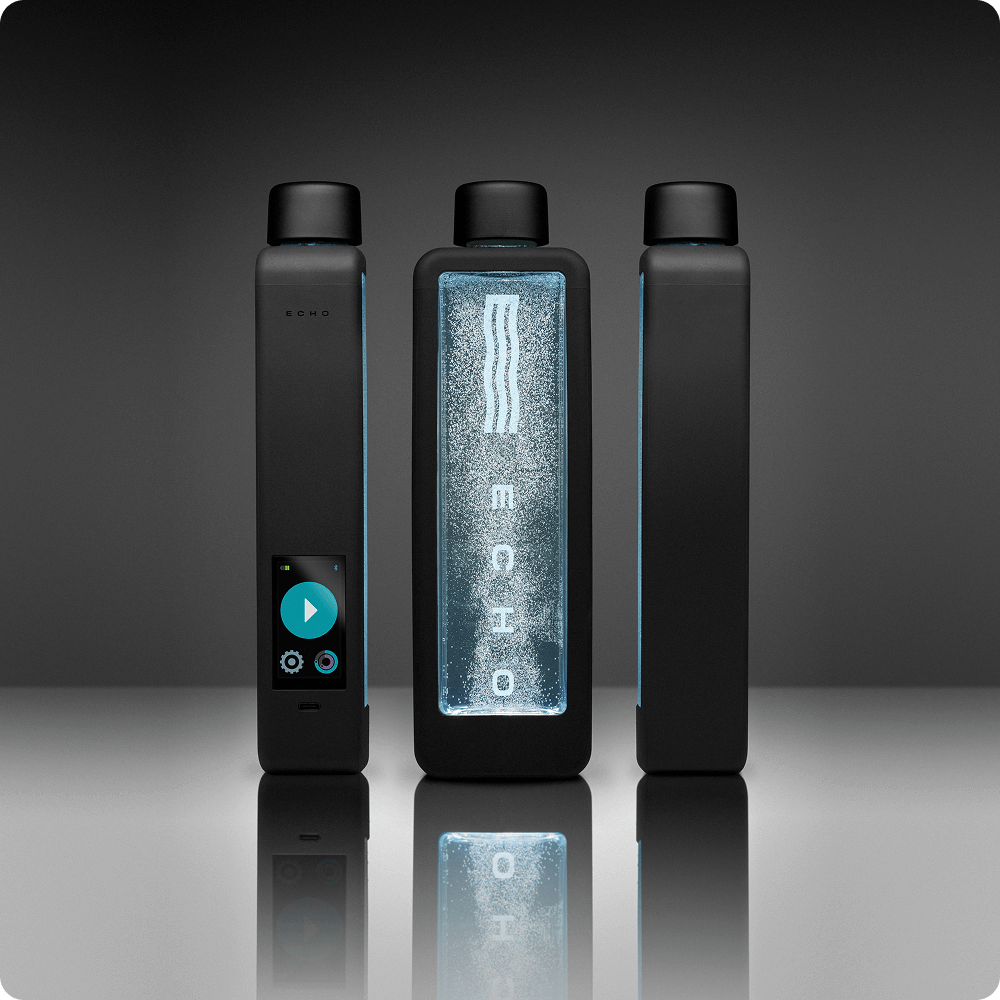

Marke: Echo WaterHydrogen Bottle
ECHO Flask
Smarte 360-ml-Hydrogenflasche mit Touchscreen, App-Anbindung und zwei H₂-Programmen.
ca. €257
Technische Daten
| Laborwert | 6,07 mg/l nach 10 min; bis 8,25 mg/l nach 20 min laut H2 Analytics Report H2AR-250116-1 |
| Volumen | 360 ml / 12 oz |
| Material | PPSU, laut Anbieter BPA/BPS/PFOS/PFAS-frei |
| Elektroden | Platinbeschichtetes Titan, PEM mit Sauerstoffauslass |
| Bedienung | Touchscreen, Bluetooth, ECHO-App |
| Akku | USB-C; 5–7 Zyklen à 10 min oder 3–4 Zyklen à 20 min |
| Maße/Gewicht | 258 × 76 × 48 mm; 455,5 g leer |
| Garantie | 5 Jahre eingeschränkt |
| Shoppreis | 299,99 USD; gerundet in Euro dargestellt |